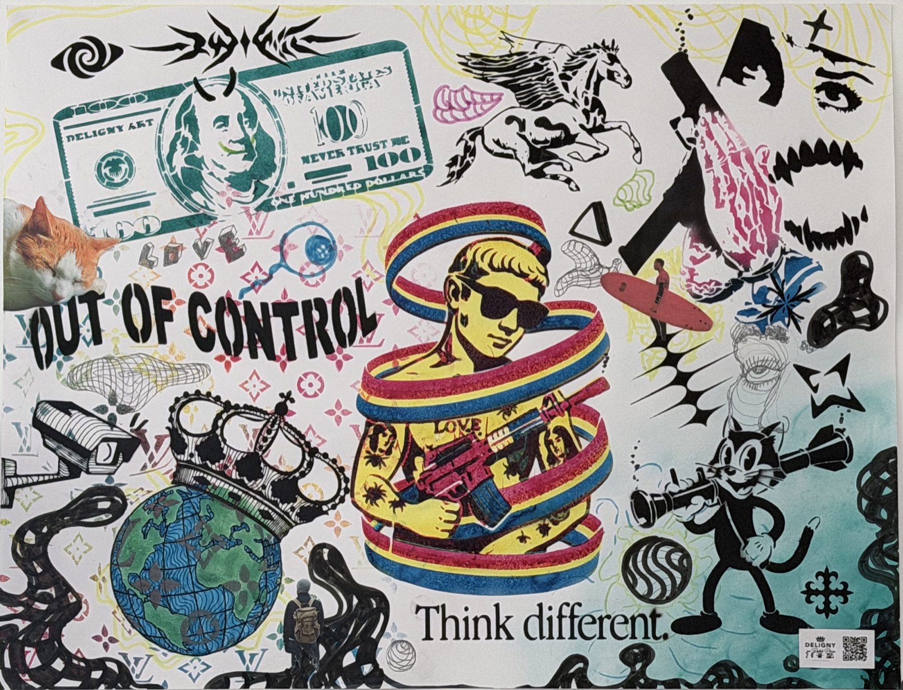
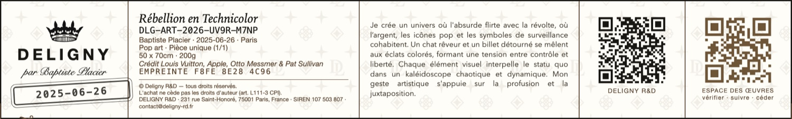
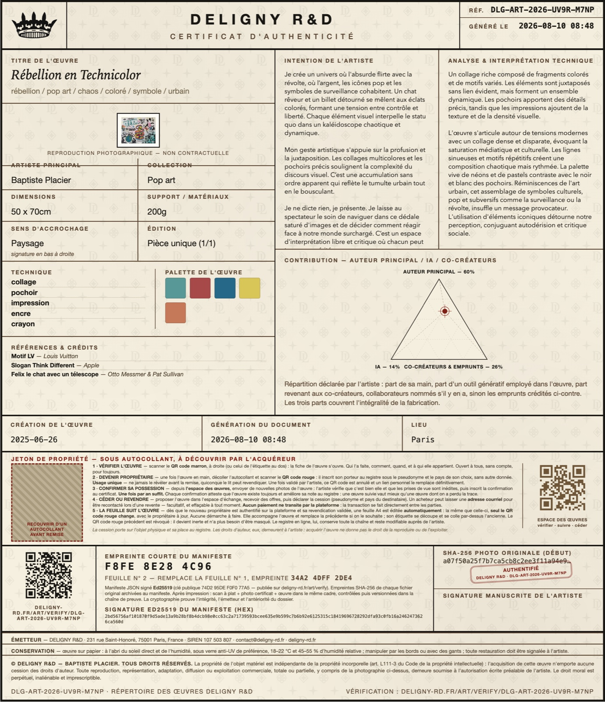

Je crée un univers où l'absurde flirte avec la révolte, où l’argent, les icônes pop et les symboles de surveillance cohabitent. Un chat rêveur et un billet détourné se mêlent aux éclats colorés, formant une tension entre contrôle et liberté. Chaque élément visuel interpelle le statu quo dans un kaléidoscope chaotique et dynamique. Mon geste artistique s'appuie sur la profusion et la juxtaposition. Les collages multicolores et les pochoirs précis soulignent la complexité du discours visuel. C’est une accumulation sans ordre apparent qui reflète le tumulte urbain tout en le bousculant. Je ne dicte rien, je présente. Je laisse au spectateur le soin de naviguer dans ce dédale saturé d'images et de décider comment réagir face à notre monde surchargé. C’est un espace d'interprétation libre et critique où chacun peut trouver sa vérité.
L'œuvre s'articule autour de tensions modernes avec un collage dense et disparate, évoquant la saturation médiatique et culturelle. Les lignes sinueuses et motifs répétitifs créent une composition chaotique mais rythmée. La palette vive de néons et de pastels contraste avec le noir et blanc des pochoirs. Réminiscences de l'art urbain, cet assemblage de symboles culturels, pop et subversifs comme la surveillance ou la révolte, insuffle un message provocateur. L'utilisation d'éléments iconiques détourne notre perception, conjuguant autodérision et critique sociale.
| Artiste principal | Baptiste Placier |
|---|---|
| Collection / style | Pop art |
| Création | 2025-06-26 (exacte) |
| Dimensions | 50 x 70cm |
| Support / matériaux | 200g |
| Édition | Pièce unique (1/1) |
| Lieu de création | Paris |
| Techniques | collage, pochoir, impression, encre, crayon |
| Mots-clés | rébellion / pop art / chaos / coloré / symbole / urbain |
Auteur principal 60 % · IA 14 % · co-créateurs 26 %. Une part d IA intervient dans l œuvre. L IA qui a servi à documenter cette fiche n est jamais comptabilisée.
| élément | référence | artiste / origine | confiance |
|---|---|---|---|
| motif LV | motif Monogramme Louis Vuitton | Louis Vuitton | 100% |
| slogan Think Different | Think different, Apple 1997 | — | 100% |
| Felix le chat avec un télescope | Felix the Cat | Otto Messmer & Pat Sullivan | 100% |
| billet avec Benjamin Franklin et cornes | billet 100 USD | — | 100% |
| chat endormi | — | — | 90% |
| homme en jaune avec des lunettes et arme | — | — | 90% |
| motif monogramme avec symboles et couleurs variées | motif monogramme Louis Vuitton | Louis Vuitton | 90% |
| texte Out Of Control | — | — | 80% |
| caméra de surveillance | — | — | 80% |
| couronne noire et blanche sur globe terrestre | — | — | 80% |
| cheval ailé stylisé | Pégase | — | 70% |
| planète avec couronne | — | — | 70% |
| surfeur sur planche rose | — | — | 60% |
| homme en silhouette avec sac à dos | — | — | 60% |
| œil stylisé et formes géométriques noires | — | — | 60% |
| triangle rose avec texture | — | — | 50% |
Emprunts documentés et validés par l'artiste (identification assistée par IA) — démarche de transparence, un crédit ne vaut pas autorisation.
…
…
Laisser un avis sur cette œuvre →
| pièce | SHA-256 | empreinte visuelle |
|---|---|---|
| originale | a07f50a25f7b7ca5cb8c2ee3f11a94e9e66165157e6c698bbcc7e990aa949ac2 | cecad4b2d2d2472d |
| Algorithme | Ed25519 (RFC 8032) |
|---|---|
| SHA-256 du manifeste | f8fe8e284c9692bfff4ccfe935c73169543e83c121f6ecf366fb26b149f19524 |
| Signature | 2bd56756af101870f9d5ade13a9b28bf8b4dcb98e0cc63c2a71739593bcee635e9b599c7b6b92e6125315c18419696728292dfa93c0fb16a2462473626ca560d |
| Clé publique | 74d295def0f077a57770d479a2e12f91ec09580ff0696a812620b8e078fc007f (cle-publique.txt) |